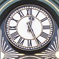
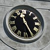
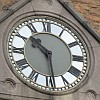

Jusqu'à l'onze dé Juîn mille huit chents nénante-huit, y'avait eune difféthence dé huit minnutes et vîngt-sept s'gondes entre l'heuthe dé Jèrri et l'heuthe officielle du Rouoyaume Unni, mais d'vièrs quatre heuthes dé l'arlévée chu jour-là la nouvelle louai fut procliâmée dans l'Vièr Marchi et l'heuthe dé Greenwich dévînt l'heuthe officielle siez nous.
Jusqu'à l'onze dé Juîn mille huit chents nénante-huit, y'avait eune difféthence dé huit minnutes et vîngt-sept s'gondes entre l'heuthe dé Jèrri et l'heuthe officielle du Rouoyaume Unni, mais d'vièrs quatre heuthes dé l'arlévée chu jour-là la nouvelle louai fut procliâmée dans l'Vièr Marchi et l'heuthe dé Greenwich dévînt l'heuthe officielle siez nous.
Duthant la Preunmié Dgèrre Mondiale quand l'Rouoyaume Unni adoptit l'système d'heuthe d'Êté en mille neu chents seize, les Êtats d'Jèrri fûtent oblyigis d'siéthe l'exempl'ye d'la Méthe-Patrie à seule fîn d'êviter l'împosition des m'suthes d'urgence duthant la dgèrre. Lé treize dé Mai don, il' adoptîtent eune louai pouor avanchi l'heuthe en Jèrri dé mînniet lé vîngt d'Mai jusqu'à mînniet lé trente dé Septembre.
Y'avait des Membres d's Êtats tchi d'mandîtent pouortchi qu'la louai tait difféthente d'la louai du Rouoyaume Unni tchi dithait qu'les hôlouoges avaient à êt' avanchies et r'tèrgies à deux heuthes du matîn. Lé Bailli rêponnit qu'i' y'avait des raisons sérieuses pouor chenna.
Mais tch'est qu'i' pouôrraient êt', ches raisons séthieuses et mystéthieuses? I' sembliéthait qu'ch'est eune tchestchion du c'mîn d'fé. Nou-s'avait chouaîsi deux heuthes pouor l'avanch'chie d'l'heuthe au Rouoyaume Unni pouor rêduithe les diffitchultés d's heuthes des trains, mais viyant qu'lé c'mîn d'fé d'Jèrri n'avait pon d'trains duthant la niet, nou pouôrrait faithe lé changement à mînniet.
Duthant l'Otchupâtion, l's Allemands changîtent l'heuthe, et pis entre mille neu chents souaixante-huit et septante-tch'iun j'gardêmes l'heuthe avanchie duthant toute l'année. Ch't expéthiment fut abandonné, mais l's Êtats ont gardé la pôssibilité dans la dreine louai d'2002 d'întroduithe l'heuthe d'Êté doubl'ye.
Et combein qu'ous avez d'hôlouoges à avanchi?
Geraint Jennings
 |
 |
 |  |
 |  |
Viyiz étout: